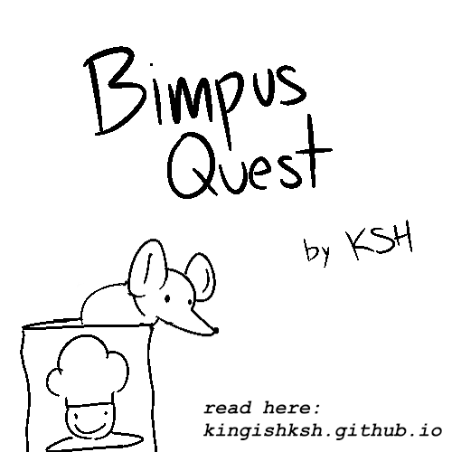
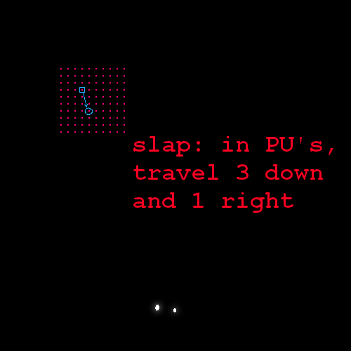
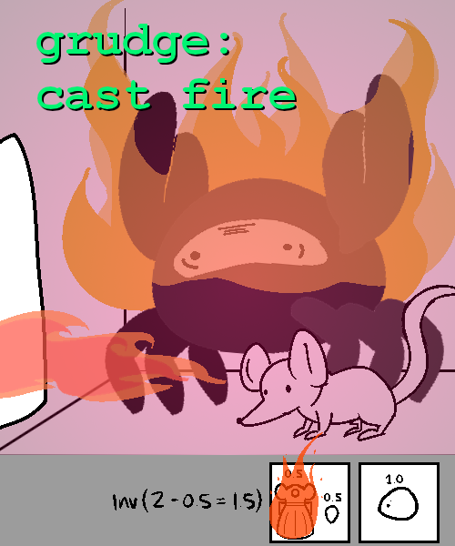
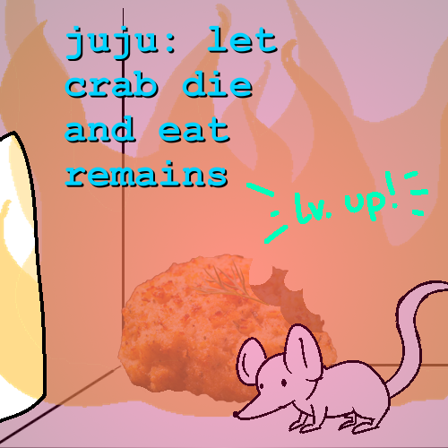
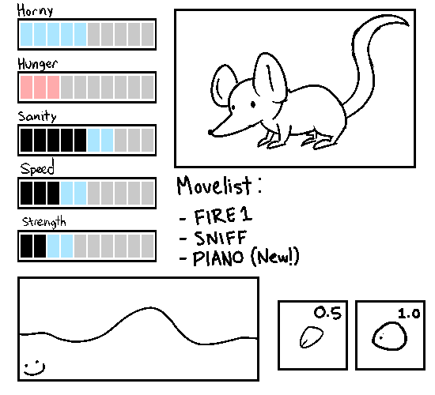
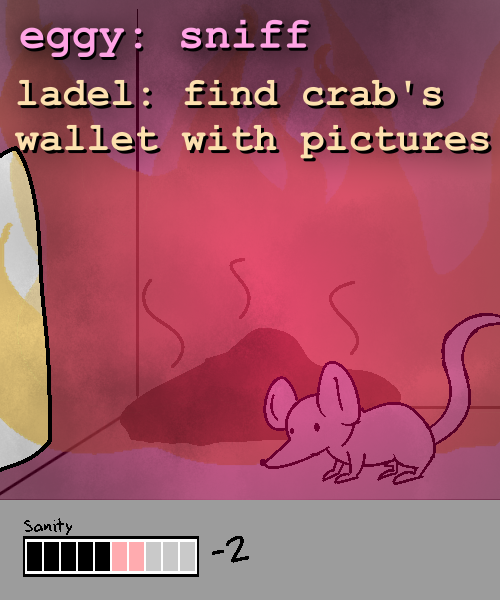
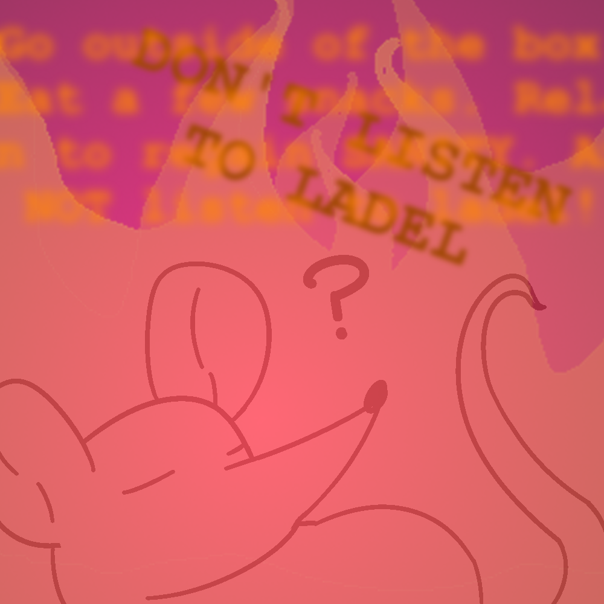
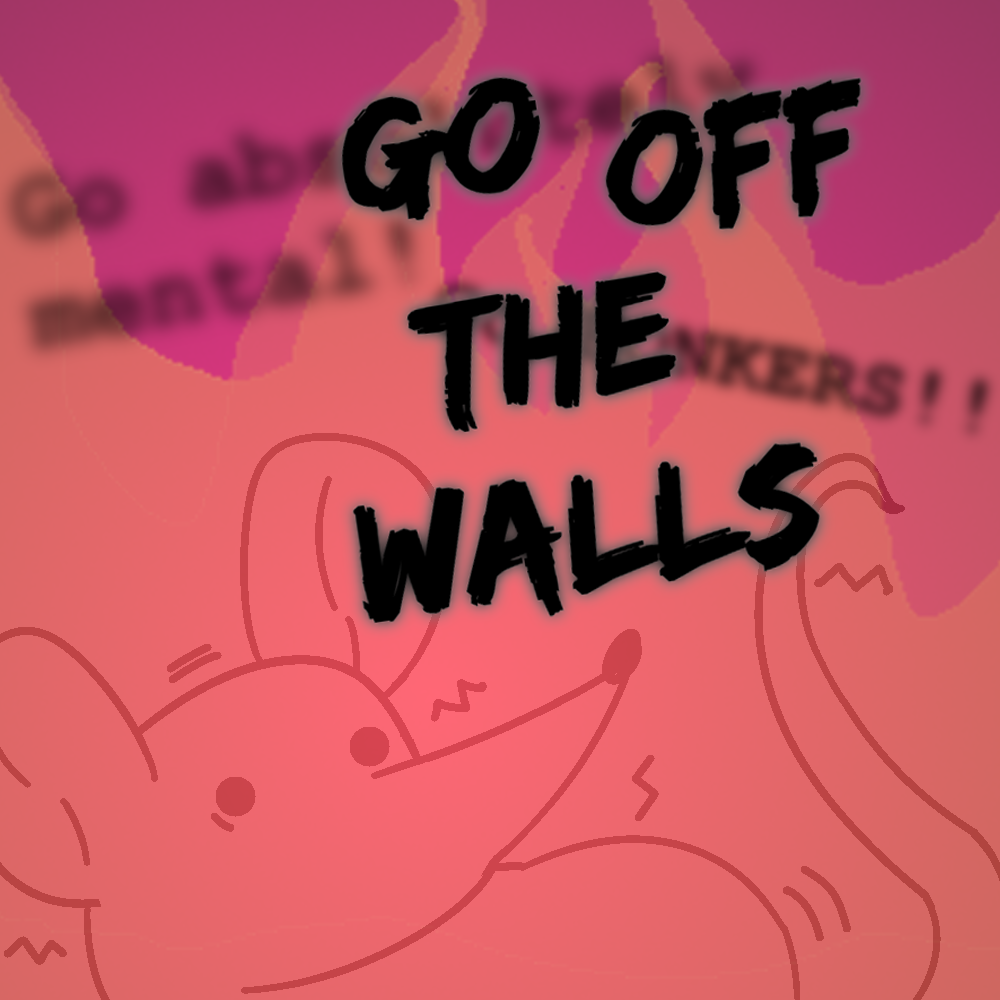
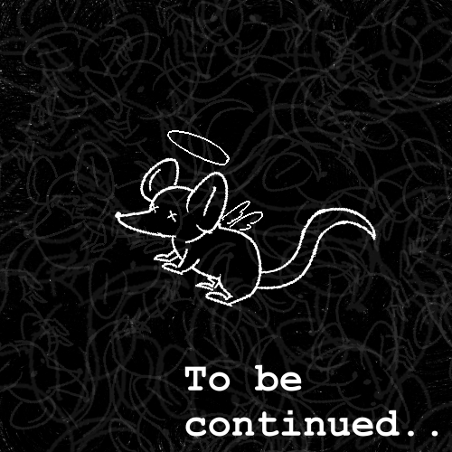

Name this rat

slap: "Bimpus"
This is Bimpus. He is a nimble RAT who is on an IMPORTANT QUEST to: eat FOOD, find a MATE and ENJOY his rat life. How will his day start out?
~~~~~~~~~~~~~

Mi5KL: step on trap
Stepping on top of Bimpus's WORTHLESS BENCH PRESS does nothing. He feels a bit taller, at least.
~~~~~~~~~~~~~

slim: cum
Bimpus's HORNEY METER is currently at 1/10. If Bimpus reaches 7/10 HORNY he gains gives access to his LIMIT BREAK: COOM
~~~~~~~~~~~~~

Eggy: eat chef boyardee
Doctagon: put can on top of trap
Bimpus likes the idea of being taller. The CAN OF FLAVOURISHIOUS LUCIANO has a SMALL PEBBLE inside it and is added to Bimpus's inventory (1/2). There's a picture of a DEVILISHLY HANDSOME young man with a wonderful hat. They say he's done something to them, but who "them" is and what he had done is unspoken of.
~~~~~~~~~~~~~

Grudge: find rat gf
There are no RAT BABES to be found. The unspoken rule of reality found in all walks in life is that finding a MATE is very hard if you don't have anything to show, which is the current state of affairs. It's advised to WATCH OUT FOR RAT BABES... but there's a chance they could be right outside Bimpus's little door

Could it be? RAT BABES at this fine hour?
~~~~~~~~~~~~~

Eggy: peek out the cubby-hole to investigate
Exiting your doorway is safe. You head out with no stress
Nothing seems to be out of place right now, but wow it's BRIGHT IN HERE. For a home, humans sure have a lot of space. The intricate nature of a human's day-to-day life is fascinating, but beyond your comprehension for a RAT-BRAIN to understand
~~~~~~~~~~~~~

ladel: seduce the human
"Hey, uh, got a can of `FLAVOURISHIOUS LUCIANO...`
...Bimpus's HORNY meter goes up by +1 (1/10 => 2/10)
~~~~~~~~~~~~~

Various: investigate under the couch
Bimpus finds two items of significance: a REMOTE and a CLEANUP BOX. He's not sure what the latter is really useful for. The REMOTE is used for a TELEVISION, but this does not appear to be the MAIN REMOTE the humans in the house tend to use. Bimpus cannot carry the REMOTE because it takes up 4 of your inventory.
The CLEANUP BOX contains THIN LAYERS (x50) that each take up 0.04 of your inventory. Meanwhile, the CLEAN UP BOX ITSELF takes up 3 of Bimpus's inventory that he cannot carry with his MINIATURE MITTS
It's either Bimpus can work on his inventory or find an ALTERNATE MEAN to move these objects around
~~~~~~~~~~~~~

Grudge: smell the air for hitns of CHEASE
The feeble rodent's mind reaches the thoughts of DELICIOUS YUMYUM CHEASE-ERRONI... such WONDEROUS DELICACY that the humans carry around fill the young Bimpus' mind with solace, having to worry about going hungry in the night. Foods HARD TO GET, ALONE AT LEAST, but you'd risk your life to get something. Anything.
You realize your HUNGER meter went up by 1 (2/10 => 3/10)
~~~~~~~~~~~~~

Various: investigate the gnome statue
The ELF FIGURE stands grimly with it's blank face. It's rather COMPARABLY SCALED, filling the small pest with even more chills down its rump. But perhaps the LACKING DETAILS make it totally HARMLESS in appearance, keeping Bimpus' SANITY at (7/10) right now.
~~~~~~~~~~~~~

Battra: hit on the elf figure
You hit on the ELF FIGURE using the same line as last time
"Hey, I got a can of FLAVORISHIOUS LUCIANO...
The ELF FIGURE seems EXTREMELY DISPLEASED AND UNIMPRESSED as a result to Bimpus' LOOSE FLIRTING and TERRIBLE MANNERS. In return, Bimpus is growing more stressed out as the ELF FIGURE GETS OUT OF HAND`. He runs back into your little rat home in fear

Sanity -2 (7/10 => 5/10)
Horny -2 (2/10 => 0/10)
~~~~~~~~~~~~~

Battra: check inventory
Your current health status doesn't look perfect, but you're fine for now
~~~~~~~~~~~~~

Mi5KL: eat pebble
Bimpus takes a large single bite of the PEBBLE, making him lose his ONE TOOTH. He has lost the ABILITY TO CHEW, rendering him UNABLE TO EAT SOLIDS
Added tooth to inventory (1/2 => 1.5/2)
~~~~~~~~~~~~~

Grudge: go out of hole, grab the remote, climb onto the couch and push the power button to play the Wii
Not only does this Wii exceed past Bimpus's inventory capabilities, but he lacks the STRENGTH (2/10) to push it. Even worse, he won't be able to push the REMOTE up to couch even if Bimpus has 10/10 STRENGTH. Our famished rat child will require STRENGTH BEYOND HIS OWN CAPABILITY.
Also, pressing the power button appears to not do anything...
~~~~~~~~~~~~~

Jalorda: make fashionable clothing with thin tissues
That one time he's changed his viewing stance, Bimpus once watched TRASH TELIVISION about dresses. Taking 25x TISSUES from the TISSUE BOX (50/50 => 25/50), Bimpus creates a FINE-LOOKING DRESS that takes 0.5 of his INVENTORY (1.5/2 => 2/2).
~~~~~~~~~~~~~

Goat: do the Marilyn Monroe thing with the vent
Currently, there is no WIND FLOW going around the current area. Bimpus does his best to please the Rat Zone's participants
Feeling kinda silly :S
~~~~~~~~~~~~~

Super: multiply
Bimpus thinks up of the million ways you could approach this, but LACKS THE MATERIALS needed to multiply.
~~~~~~~~~~~~~

ladel: think about rat wife and kids
Bimpus... has never been close to a rat of the opposite sex. Of course, it's not like he has to and should be ashamed of it, but it saddens him nontheless. Trying not to think about it is a bit overwhelming, decreasing Bimpus's SANITY (5/10 => 4/10)
Be wary of reaching 2/10 SANITY, Bimpus may act a bit differently...
~~~~~~~~~~~~~

Rosa: BLJ to the next room
Upon reaching the next room, Bimpus hits a wall. Here, he has gained SPEED (3/10 => 6/10). Here, Bimpus can stop moving and immediately head back to having 3/10 SPEED, or he can keep hugging this wall to build up even more SPEED (+10/10).
~~~~~~~~~~~~~

Slap: Travel 3 PU's down and 1 PU right
Having built up a maximum of 96/10 SPEED, Bimpus is able to clip through the cardboard box because of how collision works in this quest. By traveling 3 PU's down and 1 to the right, Bimpus manages to relocate himself inside the box rather than outside because the box is unable to comprehend the complex nature of PU's
Bimpus hopes he can one day meet his hero, pannenkoek2012, one day. PU's are so interesting
Also he can't see anything now. It's probably self explanatory why, but Bimpus explains that the reason why it's so dark is because there is no light illuminating the inner confinements of the box he's tricked the Quest's Writing-Engine to believe he's in. The lack of illuminating reflection into his eyes makes him unable to tell the different shades of grey limited by the lack of effort this quest's QM, which has ultimately led to this panel being pitch black for the most part
Hopefully the science of eyesight didn't confuse you. Bimpus did his best to simplify it for you rat-brains
~~~~~~~~~~~~~

Grudge: cast fire
With zero explanation, a hole is burnt into the wall of the box with your unimaginative fire powers. You burnt your FINE LOOKING DRESS in the process, leaving your `INVENTORY AT 1.5 (2 - 0.5 = 1.5/2)
The FRIENDLY CRAB appears to have burst into flames as a result. For some reason, this does not affect your sanity. This might even fill you with laughter over their embarassment
~~~~~~~~~~~~~

Juju: wait for crab to cook and consume
The FRIENDLY CRAB falls as a casualty to the fire. Immediately after, Bimpus consume's the CRAB CAKES the innocent fellow was fated as.

Congratulations! Bimpus has reached Lv.2! He has learned how to use PIANO (User gains the ability to play anything on the piano)
~~~~~~~~~~~~~

Eggy: sniff
Smells like danger SANITY (7/10 => 6/10)
ladel: find crab's wallet with pictures of crab spouse and child
The FRIENDLY CRAB who was burnt asunder into a CRAB CAKE has unfortunately burnt even more asunder into a PIECE OF CHARCOAL. Bimpus will unfortunately never send his condolences to the crab's wife
This doesn't sit well in Bimpus's tiny brain SANITY (6/10 => 5/10)
~~~~~~~~~~~~~

slap: acquire crab eyeballs
there are no CRAB EYEBALLS to obtain, friendly reminder that the FRIENDLY CRAB burnt crisp into charcoal. Quite impolite of him to just go away with no warning ://
SANITY 4/10 (5/10 => 4/10)
super: collect charcoal
Bimpus manages to carry a PIECE OF CHARCOAL weighing a total of 0.5, making his inventory now full (1.5/2 => 2/2)
SANITY 3/10 (4/10 => 3/10)
shillk: collect flowers to gain SANITY
There are no flowers around! If there ever was any, they would've been gone by now! Colocolo
SANITY 2/10 (3/10 => 2/10)
Bimpus appears to be DANGEROUSLY CLOSE TO LOSING IT. Better write in something to help our friend out
~~~~~~~~~~~~~

Rosa: Go outside of the box and quickly do Yoga. Eat a few snacks. Relax. Do whatever you can to regain SANITY. And whatever you do, DO NOT listen to Ladel! (edited)
Bimpus hears something, It's a bit difficult to make out what they're saying, but maybe if they didn't edit their submission so many times it would been easier
~~~~~~~~~~~~~

Ladel: have the rat go absolutely mental! go bonkers! make them go off the walls!
The voice of Colo Colo rings in Bimpus's head. It can't be helped. Our rat friend is unable to check his SANITY ?/10. The world is revolving nonstop, but maybe that's the truth to how everything works.

Bimpus' feeble rat brain is unable to regain their balance. The world is going dark, and soon the Mapuche evil will take over his mind. Another vessel for the saliva-famined, uncleaned big rat that makes all the rules.
Now, let's see what trouble Bimpus has gotten into
~~~~~~~~~~~~~